이미지·센서 기반 빗물받이 위험도 모니터링
우수주의보
강우 중 빠르게 변하는 빗물받이 상태를 이미지 분석과 센서 데이터로 판단하고, 관리자가 먼저 볼 시설을 보여주는 MVP입니다.
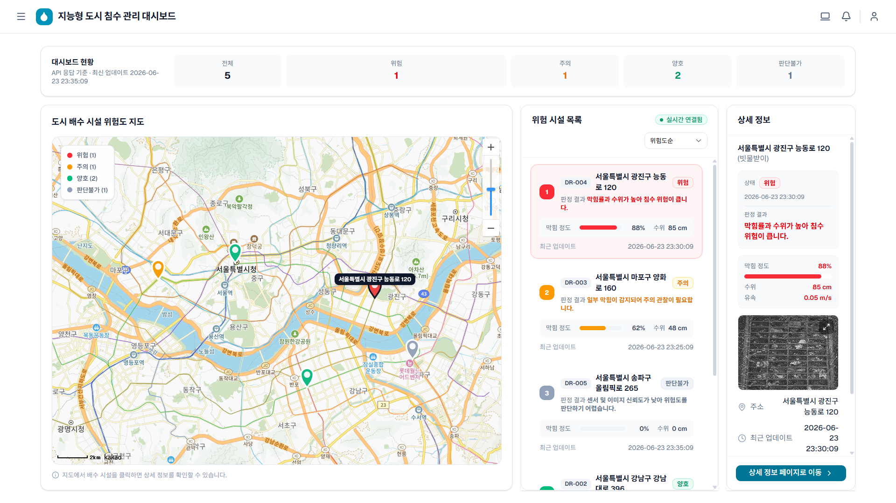
00 목차발표 흐름은 8개 항목으로 정리합니다
AGENDA
문제 정의부터 시연 흐름까지 순서대로 설명합니다.
01문제 제기
도시 침수와 빗물받이 막힘의 연결
02접근 방식
이미지와 센서 데이터를 결합하는 방식
03서비스 화면
대시보드와 시설 상세 화면 흐름
04AI 분석
YOLO, OpenCV, XGBoost 판단 흐름
05데이터 기준
위험도 라벨과 모의 센서 데이터 기준
07시연 구성
상태 변화와 YouTube 시연 영상 자리
01 문제 제기도시 침수는 작은 배수 지점에서 시작됩니다
WHY IT MATTERS
빗물받이 하나가 막히면 도로의 배수 흐름이 달라집니다.
집중호우 상황에서는 작은 막힘도 물 고임과 침수 위험으로 빠르게 번질 수 있습니다.
출처: KBS News, https://www.youtube.com/watch?v=zJ6YUlvd_oI
02 현장 문제막힘 요인은 계속 바뀝니다
FIELD FACTORS
낙엽, 쓰레기, 담배꽁초, 비닐, 토사가 유입부를 가립니다.
유입
강우와 함께 이물질이 빗물받이 주변으로 모입니다.
차폐
막힘 비율이 높아질수록 배수 효율이 떨어집니다.
위험
수위 상승과 유속 저하가 동시에 나타날 수 있습니다.
03 기존 방식의 한계점검과 신고만으로는 즉시 대응하기 어렵습니다
CURRENT LIMIT
기존 관리는 발견 이후의 대응에 가깝습니다.
정기 점검, 신고·QR, 센서 설치는 각각 장점이 있지만 강우 중 개별 시설 변화를 즉시 설명하기 어렵습니다.
| 방식 | 장점 | 남는 한계 |
|---|
| 정기 점검 | 기본 유지관리 | 반복 작업 부담 |
| 신고·QR | 현장 문제 접수 | 발견 시점 의존 |
| 센서 설치 | 정량 데이터 확보 | 비용·유지보수 부담 |
04 접근 방식이미지와 센서를 함께 읽습니다
SMARTDRAIN APPROACH
현장 이미지를 보고, 센서 흐름을 확인하고, AI가 위험도를 분류합니다.
이미지
YOLO와 OpenCV로 막힘 영역을 분석합니다.
센서
수위와 유속 데이터를 같은 시설 기준으로 묶습니다.
AI
XGBoost가 최종 위험도를 판단합니다.
화면
관리자 대시보드에 상태와 근거를 반영합니다.
05 차별점관리 범위를 개별 시설로 좁힙니다
WHAT CHANGES
사람이 먼저 찾는 방식에서, 시스템이 먼저 알려주는 방식으로.
| 구분 | 기존 방식 | SmartDrain |
|---|
| 문제 발견 | 점검·신고 중심 | 이미지·센서 기반 확인 |
| 판단 방식 | 사람 확인 | AI 위험도 판단 |
| 관리 단위 | 구역·민원 중심 | 개별 빗물받이 중심 |
| 결과 활용 | 접수·처리 | 점검 우선순위 제안 |
06 서비스 흐름관리자는 위험 시설을 선택하고 근거를 확인합니다
SERVICE FLOW
현황 확인에서 상세 근거까지 한 흐름으로 연결합니다.
현황 확인
상태별 시설 수와 지도 마커를 확인합니다.
위험 선택
위험도 기준으로 시설 목록을 좁힙니다.
근거 확인
이미지, 센서, AI 판단 근거를 봅니다.
07 메인 대시보드지도와 목록으로 위험 시설을 한눈에 봅니다
MAIN DASHBOARD
상태 요약, 위험 지도, 시설 목록을 한 화면에 배치했습니다.
운영자는 먼저 봐야 할 시설을 지도와 목록에서 동시에 확인합니다.
08 시설 상세 화면판단 근거를 한 화면에 모읍니다
DETAIL VIEW
한 시설의 현재 상태와 판단 근거를 동시에 봅니다.
이미지 분석, 수위·유속 추세, AI 결과, 상태 이력을 함께 보여줍니다.

09 AI 분석이미지 분석 결과를 위험도 판단으로 연결합니다
AI PIPELINE
YOLO가 막힘 영역을 찾고, XGBoost가 최종 등급을 판단합니다.
시각적 막힘 비율과 센서 값을 결합해 양호, 주의, 위험, 판단불가로 분류합니다.
원본 이미지
현장 사진을 기준으로 빗물받이 막힘 상태를 확인합니다.
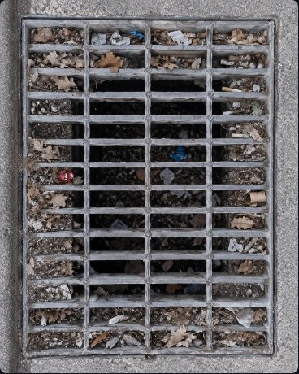
OpenCV 전처리
대비와 경계를 보정해 분석 가능한 입력으로 정리합니다.
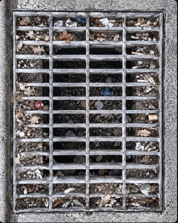
YOLO 검출
쓰레기와 낙엽 등 막힘 후보 영역을 객체 검출로 찾습니다.
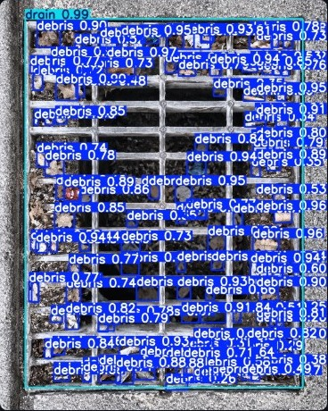
차폐율 계산
검출 결과를 면적으로 환산해 XGBoost 판단에 연결합니다.
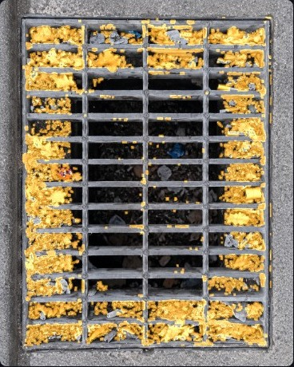
10 모델 선택정확도뿐 아니라 안정성을 함께 봅니다
MODEL DECISION
최종 모델은 정확도만이 아니라 안정성으로 결정했습니다.
8m 분할 학습 모델을 학습 안정성과 박스 정합도 측면에서 현재 적용 후보로 정리했습니다.
8n가볍고 빠르지만 복잡한 쓰레기에 약함
8s속도와 정확도의 균형 후보
8m 단일 학습고점은 있으나 학습 불안정
8m 분할 학습현재 적용 후보로 가장 안정적

11 XGBoost 데이터 기준입력 변수 공간에서 위험도 라벨을 검증합니다
XGBOOST FEATURES
차폐율, 수위, 유속 조합으로 위험도 군집을 확인했습니다.
현재 MVP는 샘플 이미지와 모의 센서 데이터를 사용해 위험도 분류 흐름을 검증합니다.
양호낮은 차폐율과 안정적인 유속 구간
주의중간 차폐율 또는 수위 상승 구간
위험높은 차폐율과 배수 저하 가능 구간
판단불가결측 또는 이미지 분석 실패 구간
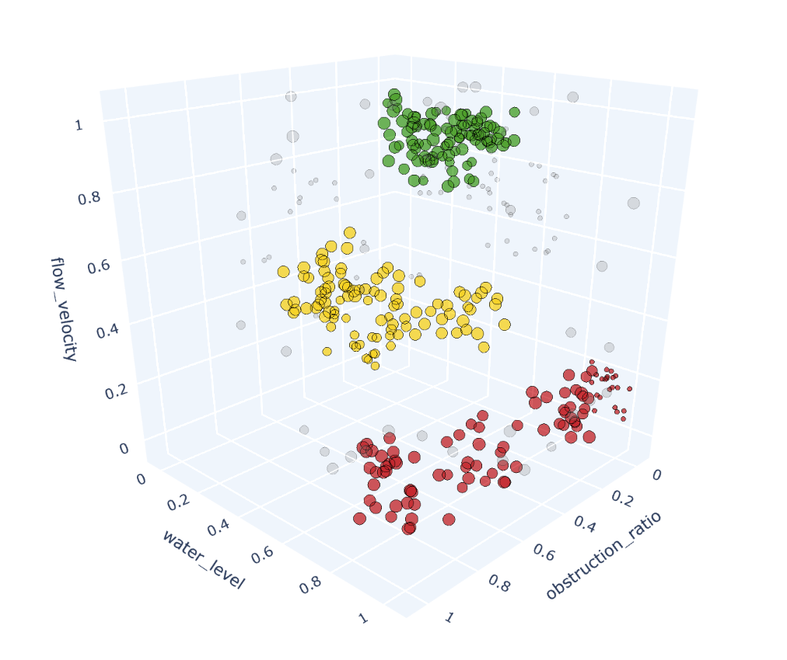
12 시스템 아키텍처분석과 화면 갱신을 분리했습니다
SYSTEM ARCHITECTURE
프론트엔드, 백엔드, AI 서비스, DB를 분리해 MVP를 구성했습니다.
Next.js, FastAPI, PostgreSQL, AI Service, WebSocket이 핵심 연결 축입니다.
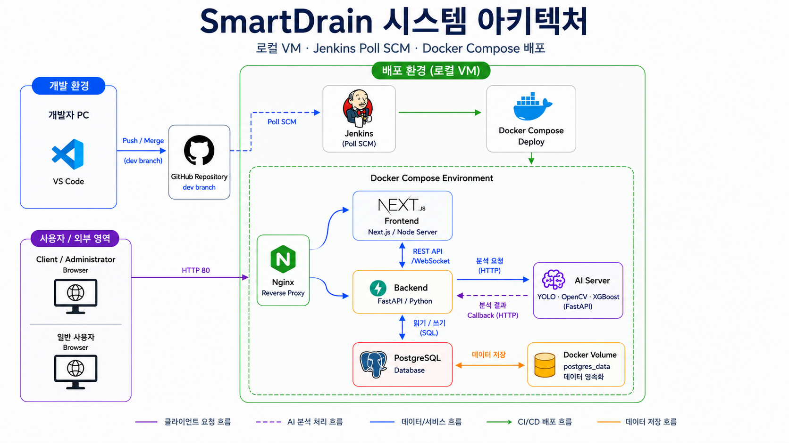
13 ERDAI 판단 근거를 시설 단위로 연결합니다
DATA MODEL
시설 기준으로 판단 근거를 연결합니다.
센서 측정값, YOLO 결과, XGBoost 위험도를 같은 빗물받이 ID로 묶어 저장합니다.
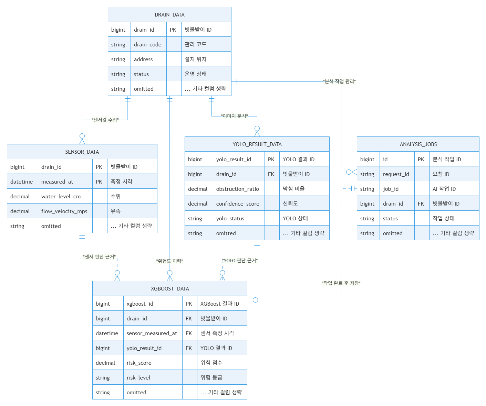
14 비동기 처리분석 대기와 화면 반영을 분리합니다
ASYNC ANALYSIS
분석 요청은 작업으로 추적하고, 결과는 실시간으로 반영합니다.
사용자는 결과를 기다리며 멈추지 않고, 화면은 최신 상태로 동기화됩니다.

15 시연 데이터네 가지 상태를 시간 흐름으로 보여줍니다
DEMO SCENARIO
양호에서 위험, 판단불가까지 상태 변화가 화면에 반영됩니다.
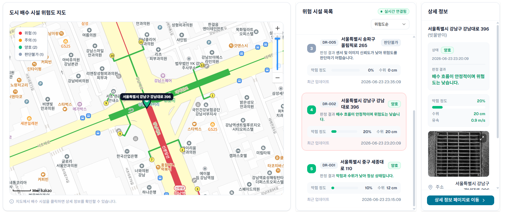
10:00 양호
수위 20cm, 유속 0.90m/s, 차폐율 12%
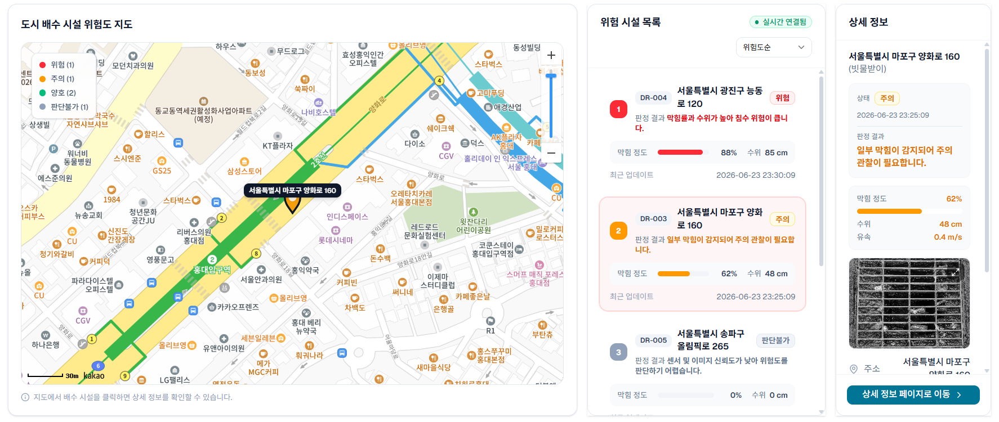
10:10 주의
수위 50cm, 유속 0.40m/s, 차폐율 45%
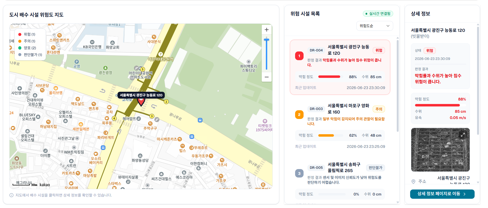
10:20 위험
수위 85cm, 유속 0.15m/s, 차폐율 84%
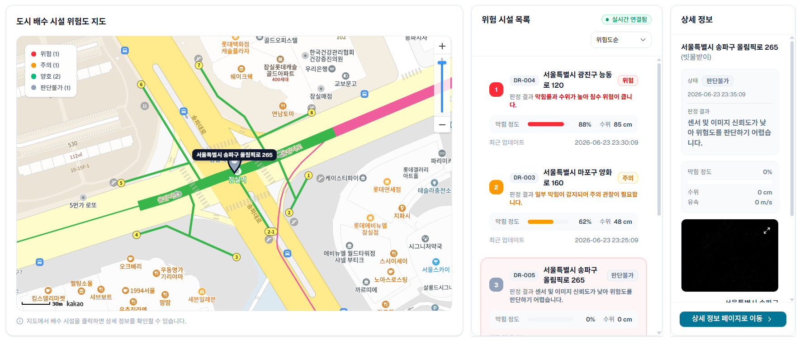
10:30 판단불가
이미지 분석 실패나 결측은 별도 상태로 관리
16 시연 영상최종 발표 전 YouTube 링크를 연결합니다
DEMO VIDEO
시연 영상 링크를 이 페이지에 배치할 예정입니다.
서비스 접속, 위험도 분석 요청, 관리자 화면 갱신 흐름을 영상으로 확인할 수 있도록 연결합니다.
YouTube Demo
최종 시연 영상 썸네일 또는 임베드 자리
17 기대 효과MVP에서 현장 운영 자동화로
MVP TO OPERATIONS
현재는 위험도 확인 MVP, 다음은 현장 운영 자동화입니다.
현재 MVP
시설별 현황, 지도, 상세 근거, AI 결과를 통합 조회합니다.
운영 확장
RTSP CCTV와 IoT 센서 연동으로 실시간성을 높입니다.
의사결정
알림, 리포트, LLM 요약으로 관리자 판단 시간을 줄입니다.
18 팀 구성Q&A
TEAM 우수주의보
Q&A
이미지·센서 기반 빗물받이 위험도 모니터링 시스템 SmartDrain입니다.